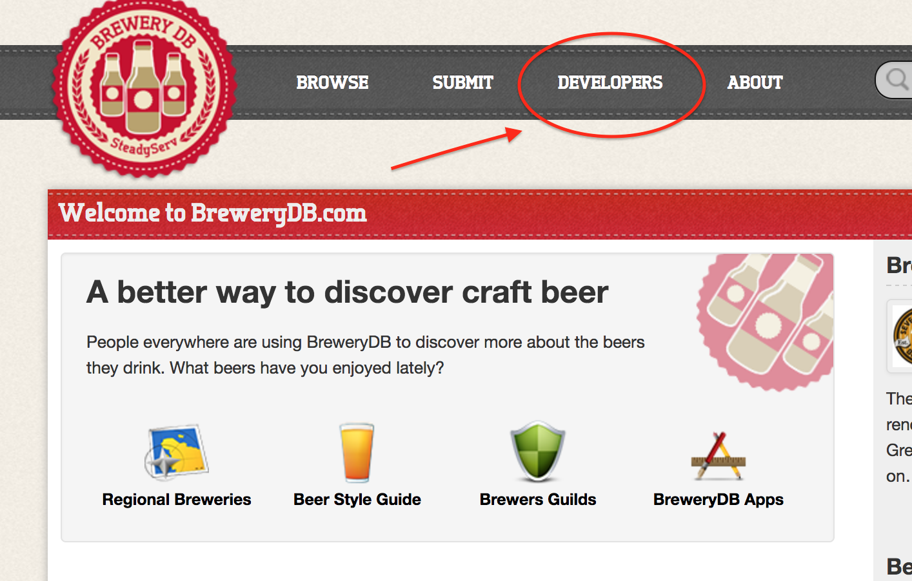
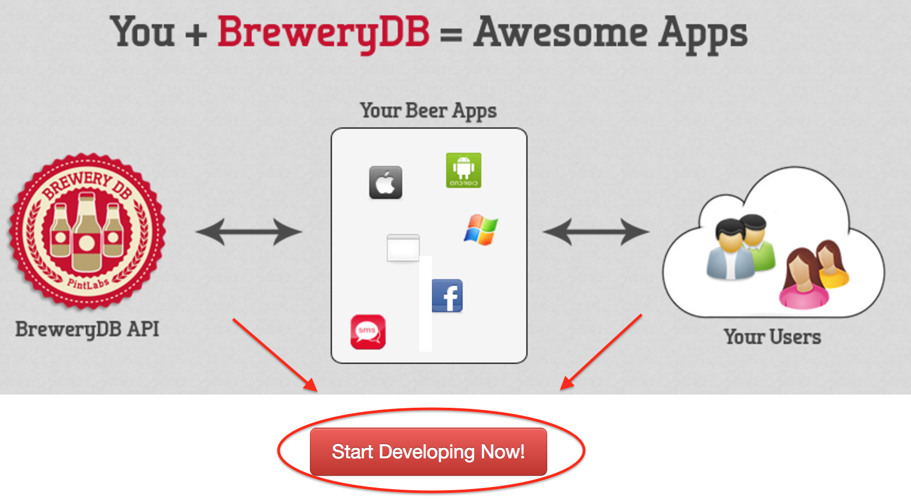
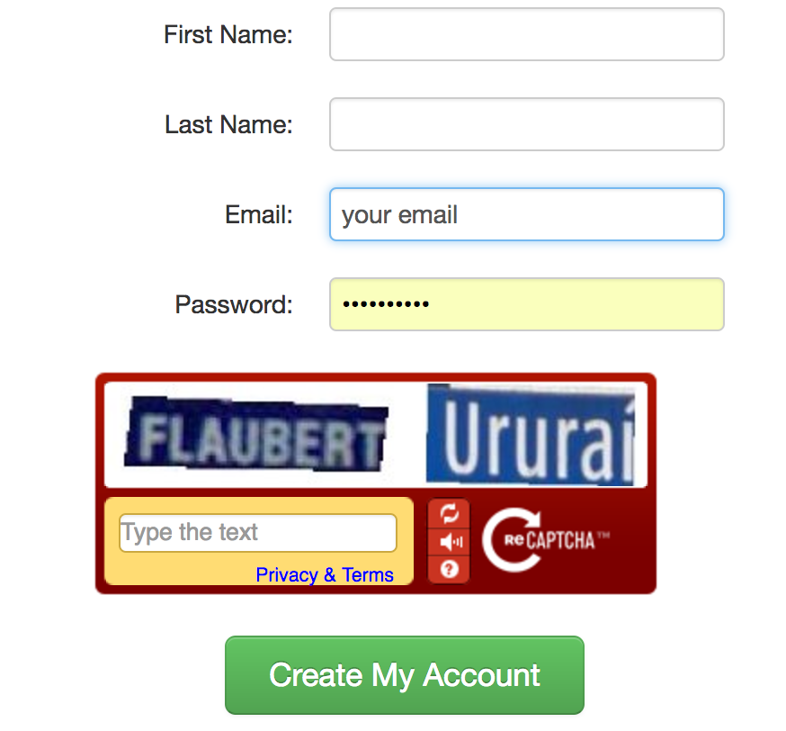
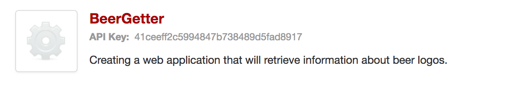

Getting an API key
- The first step is to go to the BreweryDB website and acquire an API key.
   - After you have created an account and Agreed to Terms of Service, you will then be prompted to Register A New App. After that you will have to fill in some information regarding your app, only the Name and Description are required.
- Then success!! You have acquired your first API key. 
Using JavaScript to make HTTP calls to BreweryDB
Simple example of a GET Request with the search method
So this simple example is all that is needed to make a call to the BreweryDB and get the description of a beer. I provided an API key but you can go ahead and put the one you made earlier to make sure it works. If you go to the Result tab you will see nothing is displayed. Because if you look at the req.open() you will see there is a section in the call [PutBeerHere]. I have provided some beer for you to copy and paste. Try it out and see the results!!
Replace the whole [PutBeerHere] brackets TOO! You will need to click on the "Edit in JSFiddle link at the top to edit".
Naughty 90, Cerasus Dog, Barbe Rouge
JSON, or JavaScript Object Notation
Understanding what is returned and how to retrieve that information
So if it works, awesome!! If not, then another issue could be that the return values are not the same for every beer. The BreweryDB returns three types of formatted data JSON, XML and serialized PHP. If you look at the req.open you will see we explicitly ask for JSON.
JSON is built on two structures:
- A collection of name/value pairs. In various languages, this is realized as an object, record, struct, dictionary, hash table, keyed list, or associative array.
- An ordered list of values. In most languages, this is realized as an array, vector, list, or sequence.
Disclaimer: I am a beginning web development student thus if any information is incorrect I would be more than happy for you to correct me.
IMPORTANT!! If you opened jsfiddle and cannot see the results it might be a Allow-Control-Allow-Origin error click here to find out how to fix it.